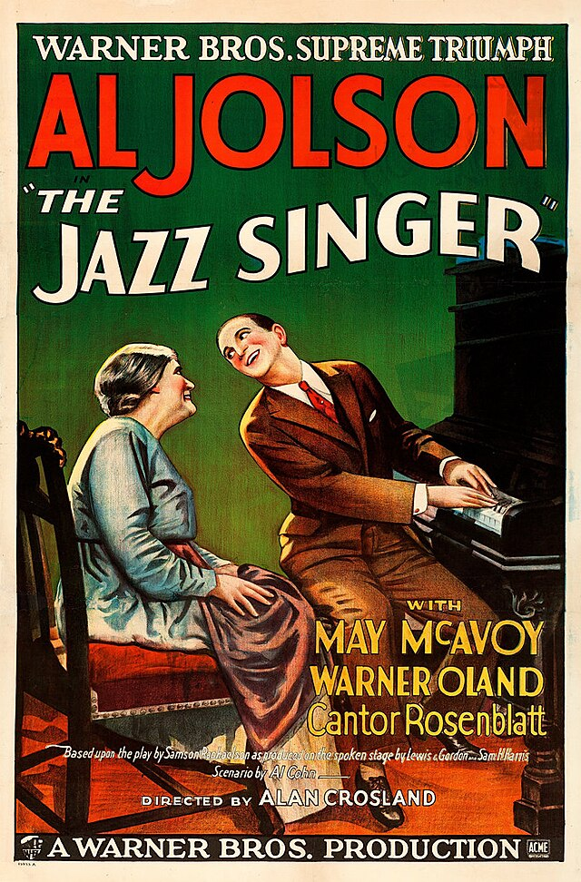

Top 10 des films et des acteurs connus
Et une liste de films à voir, surtout sur Netflix
Histoire du cinéma

- 1816 : Invention de la photographie par Nicéphore Niépce.
- 1888 : Invention du celluloïd
- 1891 : Thomas Edison et les premiers pas du cinéma
- 1892 : Le premier dessin animé
- 1895 : Création du cinématographe des frères Lumière
- Le 28 décembre 1895 : Première séance publique de projection du cinématographe
- 15 mai 1902 : Le Voyage sur la Lune de George Melies, 14 minutes de narration.

- Le 6 octobre 1927 : The Jazz Singer: le premier film sonore.
- 
- 1932 : Le premier film en couleur avec le Technicolor, Des arbres et des fleurs” (1932) Silly Symphonies.